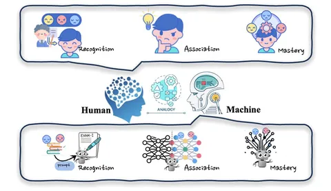

В постоянно изменяющихся условиях важно поддерживать актуальность информации, которой обладают LLM. Остро встаёт вопрос редактирования знаний модели — его и рассматривают авторы сегодняшней статьи.
В ней представлено три типа методов редактирования знаний. Первый — обращение к внешним знаниям. В этом случае модель получает новую информацию в виде контекстов, а затем пользуется ими, когда нужно ответить на вопрос.
Вначале собирают набор демонстраций:
+ копирования — показываем модели, что надо уметь повторять факты;
+ обновления — не только повтор факта, но и перефразирование;
+ сохранения — показываем LLM, что при изменении одного факта другие не должны меняться.
Далее эти демонстрации добавляются в текущий промт и отправляются на вход.
Второй тип — внедрение знаний. Это добавление новых параметров, которые позволяют выстроить связи между старыми и новыми знаниями. Суть заключается в создании нового feed forward-слоя, который будет меньше первого. Веса на втором определяются файнтюнингом по текстам с изменёнными знаниями.
Третий вид — собственно, редактирование. Новые параметры при этом не добавляются, но меняются данные, которыми модель уже обладает. Существует два способа сделать это:
+ Meta Learning предполагает обучение гиперсетки, предсказывающей изменения параметров, которые необходимо сделать. Исходя из этого мы обновляем веса и минимизируем loss на новых данных.
+ Location-then-Edit предполагает определение конкретного места в модели, где сосредоточены знания о каком-либо факте. Для этого мы наблюдаем за тем, как меняются градиенты.
Эффективность изменения знаний авторы предлагают измерять с помощью специального бенчмарка. Он состоит из шести датасетов, проверяющих разные аспекты: вставку, добавление, изменение и удаление знаний. Датасет доступен по этой ссылке.
Спасибо за внимание! Делитесь мыслями по теме в комментариях :)
Разбор подготовил
Душный NLP
